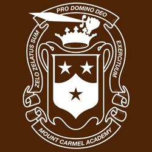

Resume
Paige Beltemacchi
9630 S Winchester Ave
Chicago, IL 60643
Email: pbeltemacchi2@hawk.iit.edu
Phone #: (312)-504-9553
Experiance
National Honors Society, 2019 - 2021
As a national honors society member, I gave tours on open house dates and try to market why Mount Carmel is a great fit for many incoming freshmen.
STEM Cohort, 2019 - 2021
As a part of the STEM cohort, we are tasked to think as problem solvers and innovators. To do projects of differing subjects such as my personal project of making a rechargeable high energy density graphene battery using household materials. We are also challenged to become faster learners through different subjects. An example of this would be coding a drone to follow an exact pathway. Although I had coded before this was a coding software I had never seen or used.
Mount Carmel High School, 2017-2021

6410 S.Dante Ave, Chicago IL, 60637